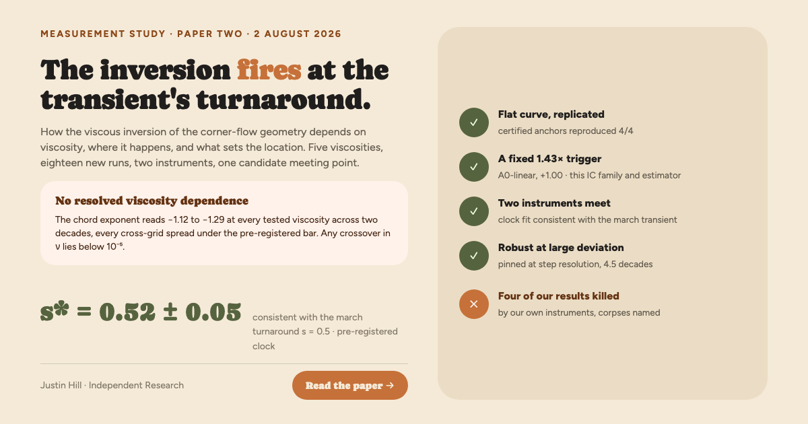

The viscous inversion fires at the transient's turnaround
No resolved viscosity dependence. A fixed 1.43× trigger. Two instruments meeting at the transient's turnaround.
Justin Hill, Independent Research. The sequel to the inversion study: how the inversion depends on viscosity, where in the collapse it happens, and what sets that location. Eighteen new DNS runs, two march ladders, every estimator and bar pre-registered before the data it judges existed, and a two-lens audit (roughly 230 claims recomputed, twelve scoping corrections) run before this page was written.
Ten new runs through the certified estimator, verbatim. The deep-collapse exponent shows no trend across two decades of viscosity, and no approach toward the inviscid value: any crossover in ν lies below 10−5. The data are consistent with a ν → 0+ discontinuity; they cannot distinguish it from a crossover below the tested range.
| ν | 128×384 | 256×768 | spread |
|---|---|---|---|
| 0 (matched anchor) | +0.589 | +0.585 | 0.005 |
| 10−5 | −1.174 | −1.190 | 0.016 |
| 3×10−5 | −1.271 | −1.156 | 0.115 |
| 10−4 | −1.119 | −1.187 | 0.068 |
| 3×10−4 | −1.286 | −1.204 | 0.082 |
| 10−3 | −1.207 | −1.231 | 0.024 |
The two previously certified viscosities replicated 4/4 against these independent runs at doubled cadence; the three new points are single run-pairs with cross-grid agreement as their check. A two-slope-form fit puts the asymptote at −1.07 ± 0.03, systematically shallower than the chord values: both are quoted, neither replaces the other, and the flatness conclusion is insensitive to the gap.
The trigger
The switch from inviscid-like to inverted scaling sits at a fixed amplitude multiple of the initial condition: A* = 52.7–54.2 × A0 in twelve measurements at ν ∈ {10−4, 10−3} × A0 ∈ {50, 100, 200}, both grids, and bracketed inside the same band at the three other viscosities. Since the initial corner-gradient amplitude is 37.7 × A0, a geometric constant of this IC family, the trigger is a growth factor of 1.43 above the initial value: about a third of an e-fold, essentially at collapse onset. The switch is nearly a step, completing within ~0.2–0.3 e-folds (measured at ν = 10−4 only). The factor is a property of this IC family, this observable, and this estimator, and those three dependencies are declared in the paper.
The clock: two instruments meet
The rescaled-frame march certified the corner profile as an attractor whose perturbation transient peaks at s = 0.5. An empirical clock fit places the DNS switch on the same axis:
Consistent with the transient's turnaround, resolved to the ds = 0.25 step. The pre-registered alternative, that the switch waits for settling onto the self-similar profile (s ~ 3.7–13.5), is refuted, within the pre-registered clock family, by more than a factor of five. A large-deviation march then closes the linearity gap as far as the march reaches: the s = 0.5 turnaround is amplitude-invariant across 4.5 decades of perturbation amplitude, the transient's end stretches (+9%) while its turnaround stays pinned, and the basin-or-instrument edge lies between amplitudes 3×10−2 and 10−1 along the one direction tested.
The mechanism statement these results license, exactly bounded: viscosity is necessary for the inversion, since inviscid runs on identical windows never invert; and at the two viscosities where the clock was fit, the inversion occurs at a rescaled time consistent with the transient's turnaround, well before self-similar settling. The switch location tracks a ν-independent, A0-linear stage of the collapse whose dynamical identity remains open.
What died on the way
Four of our own results were killed by our own instruments during this campaign. They are retained in the paper and the repository, named.
Scope, stated as in the paper: one scenario family, free-slip viscosity, code units, two laptop grids, seed-0 march direction. Novelty is claimed only for the exponent-vs-viscosity curve, under the prior-art search's stated horizon; the trigger, width, clock, and basin results are measurements with no novelty claim attached.
Full text: ADDENDUM1.md; records CLOSING_SWEEP.out, BASIN_END.out; every rule and bar pre-registered before its data existed. Nothing above modifies a published claim.
I set the questions, imposed the discipline, and decided what to pursue, what to retract, and what to publish. The derivations, the code, and the prose were carried out by Claude (Anthropic) under my direction, and the paper states exactly which parts I can and cannot defend at expert level. I am not a mathematician by training. I worked on this because it interested me, and I had fun doing it.
Tool disclosure: this work is AI-assisted, and the paper says exactly how: which parts the author can defend at expert level, which are machine-derived and awaiting expert review, and where responsibility lies. See the disclosure section in the PDF, written to the Leiden Declaration's recommendations.
The image social platforms show for this page. 1200×630.
{kind=link}
